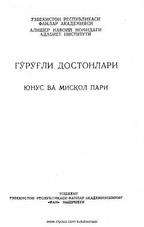

GDG'o'ro'g'li dostonlari turkumiga kiruvchi Yunus va Misqol pari dostoni.
Ushbu asar o'zbek xalq eposining yorqin namunalaridan biri bo'lib, G'o'ro'g'libek va uning qirq yigiti sarguzashtlarini hikoya qiladi. Kitobda Yunus va Misqol pari obrazi atrofida kechadigan qiziqarli voqealar bayon etilgan. Matn xalq og'zaki ijodi an'analari asosida ilmiy nashrga tayyorlangan.